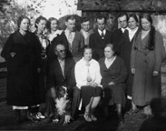
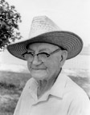
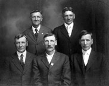
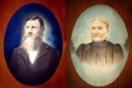
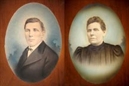

The following are available:
Lucy Clewett's collection of letters
Photographs:
Index of Family Photographs
Flickr collection with subject and photo info
| Mary Brinker |
The Orville Miller Family  |
| Simon Sundstrom  |
The Sundstrom Brothers  |
| John Sundstrom and Maria Sandström  |
| Anders Johansson and Maria Jacobsson  |
My father died 19 June 2011.
He introduced me to researching the family tree. We both worked on our Sundstrom roots together.
And while I searched for family on my mother's side, he dug into his second wife's family history.
We shared what we found and built on each others success.
I wrote a tribute for him that includes pictures and a brief obituary.
You can find that tribute on
my blog.
This family tree contains more than sixty generations,
and it contains 40,531 individuals, 18,399.
The tree was updated 23 November 2012.
The tree begins with the family of
Bill Sundstrom and
Betty Cassady.
I have added two reports listing the ancestors of Bill Sunstrom and Betty Cassady. Due to limitation of my software, only 30 genartons are shown for bill
The family tree folders on the left contain the indexes to
If you are looking for a person under 50 years old and the person is not know to be dead,
only the name will be available.
There are a large number of new entries and changes. most of the new entries are Swedish relatives. The changes are described below, and were incorporated to fix a serious error.
There was a large ERROR in this tree. I am no longer convinced that I have the correct parentage for
Martha Ann Dexter, the great-grandmother of my grandmother, Evelyn (Miller) Brinker.
Another large ERROR has been corrected in that the parents of John Bishop Porter were incorrectly
listed along with his ancestors. The error has been corrected.
Photographs of some family members are available. Some are listed on the left and require that you click on the photo to see a larger version. Still other can be acquired from a photograph index. Just click on the link to the left. The index links to a set of photos from my Flickr site.
I have also tried to find all the descendants of my grandparents' great-grandparents
and the descendants of their siblings.
I have been fairly successful in listing them. The best examples of this research are the
siblings of Zenus Miller and Nancy Partridge and Benjamin Foster Tupper.
To check out the descendants start with one of the following anscestoral pair: